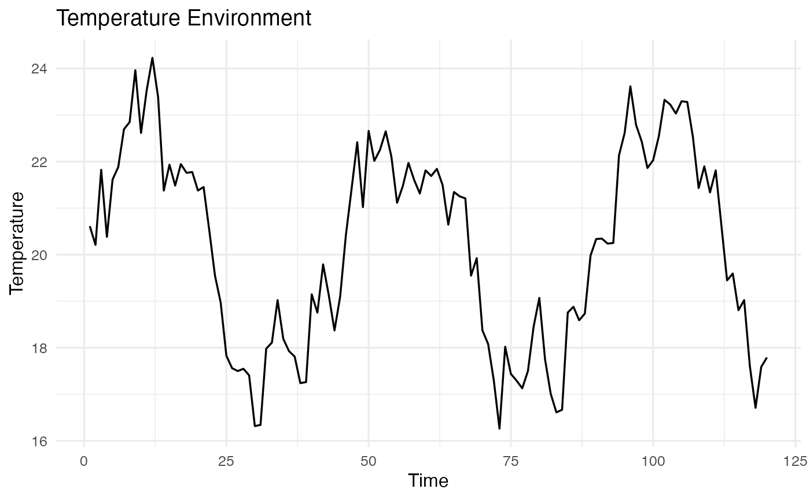
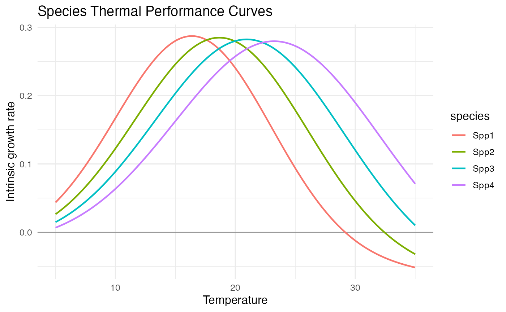
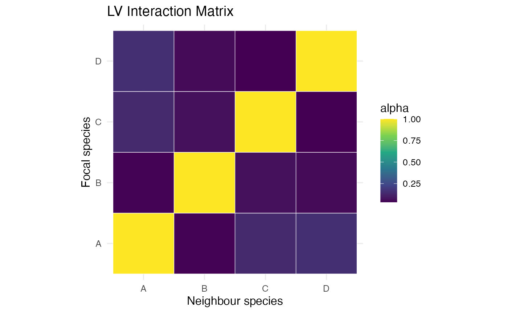
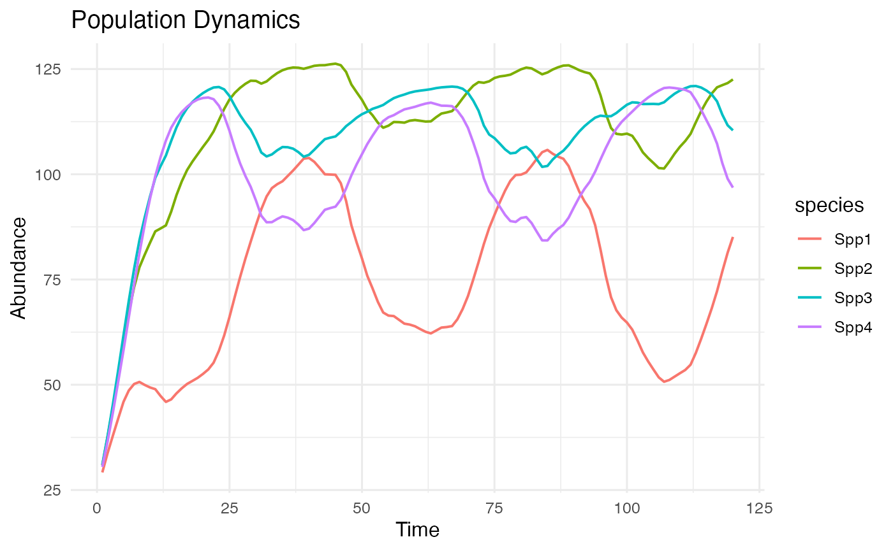
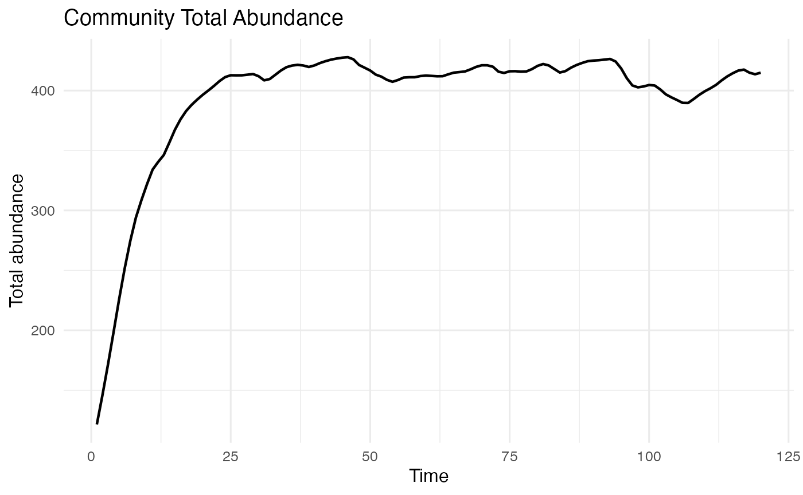

Single-Community Walkthrough: Continuous-Time LV
Source:vignettes/lv_continuous_single_community.Rmd
lv_continuous_single_community.RmdPurpose
This walkthrough defines one Lotka-Volterra community, exposes it to one temperature time series, runs the continuous-time simulator, and makes a few basic plots.
library(dplyr)
library(ggplot2)
library(tidyr)
library(community.simulator)
theme_set(theme_minimal(base_size = 12))Define One Environment
set.seed(2)
duration <- 120
time <- seq_len(duration)
temperature <- 20 +
2.5 * sin(2 * pi * time / 45) +
stats::arima.sim(model = list(ar = 0.55), n = duration, sd = 0.6)
environment <- tibble(
time = time,
temperature = as.numeric(temperature)
)
ggplot(environment, aes(x = time, y = temperature)) +
geom_line(linewidth = 0.6) +
labs(x = "Time", y = "Temperature", title = "Temperature Environment")
Define One Community
community <- make_a_community(
S = 4,
a_b_mean = 0.32,
a_b_range = 0.00,
a_b_distribution = "regular",
b_opt_mean = 20,
b_opt_range = 7,
b_opt_distribution = "regular",
sd_perf_distribution = "regular",
sd_perf_mean = 7.5,
sd_perf_range = 2,
community_seed = 12,
a_d = 0.02,
z = 0.03,
lv_interaction_spec = list(
label = "symmetric_competition",
type = "competition",
symmetry = "symmetric",
distribution = "uniform",
parameters = list(min = 0.03, max = 0.16),
diagonal = 1
)
)Species traits
species_traits <- tibble(
species = paste0("Spp", seq_len(community$S)),
max_birth = community$a_b_i,
thermal_optimum = community$b_opt_i,
width = community$sd_perf_i,
death_intercept = community$a_d_i,
death_temperature_slope = community$z_i
)
species_traits
#> # A tibble: 4 × 6
#> species max_birth thermal_optimum width death_intercept death_temperature_sl…¹
#> <chr> <dbl> <dbl> <dbl> <dbl> <dbl>
#> 1 Spp1 0.32 16.5 6.5 0.02 0.03
#> 2 Spp2 0.32 18.8 7.17 0.02 0.03
#> 3 Spp3 0.32 21.2 7.83 0.02 0.03
#> 4 Spp4 0.32 23.5 8.5 0.02 0.03
#> # ℹ abbreviated name: ¹death_temperature_slopeTemperature performance curves
temperature_grid <- tibble(temperature = seq(5, 35, length.out = 200))
performance_curves <- tidyr::crossing(
species_traits,
temperature_grid
) |>
mutate(
birth = max_birth * exp(-0.5 * ((temperature - thermal_optimum) / width)^2),
death = death_intercept * exp(death_temperature_slope * temperature),
intrinsic_growth = birth - death
)
ggplot(performance_curves, aes(x = temperature, y = intrinsic_growth, colour = species)) +
geom_hline(yintercept = 0, linewidth = 0.3, colour = "grey50") +
geom_line(linewidth = 0.8) +
labs(
x = "Temperature",
y = "Intrinsic growth rate",
title = "Species Thermal Performance Curves"
)
Interaction matrix
interaction_matrix <- as.data.frame(as.table(community$alpha_ij)) |>
rename(consumer = Var1, neighbour = Var2, interaction = Freq)
ggplot(interaction_matrix, aes(x = neighbour, y = consumer, fill = interaction)) +
geom_tile(colour = "white") +
scale_fill_viridis_c() +
coord_equal() +
labs(
x = "Neighbour species",
y = "Focal species",
fill = "alpha",
title = "LV Interaction Matrix"
)
Run Dynamics
initial_abundances <- rep(25, community$S)
abundances <- simulator_lv_continuous(
input_com_params = community,
TcelSeries = matrix(environment$temperature, nrow = 1),
initial_abundances = initial_abundances,
times = environment$time,
output_times = environment$time,
temperature_interpolation = "linear",
immigration_rate = 0.05,
immigration_mode = "continuous",
ode_method = "lsoda",
rtol = 1e-6,
atol = 1e-8,
max_step = 1
) |>
mutate(time = environment$time) |>
pivot_longer(
cols = starts_with("Spp"),
names_to = "species",
values_to = "abundance"
)Plot Dynamics
total_abundance <- abundances |>
group_by(time) |>
summarise(total_abundance = sum(abundance), .groups = "drop")
ggplot(abundances, aes(x = time, y = abundance, colour = species)) +
geom_line(linewidth = 0.7) +
labs(x = "Time", y = "Abundance", title = "Population Dynamics")
ggplot(total_abundance, aes(x = time, y = total_abundance)) +
geom_line(linewidth = 0.8) +
labs(x = "Time", y = "Total abundance", title = "Community Total Abundance")